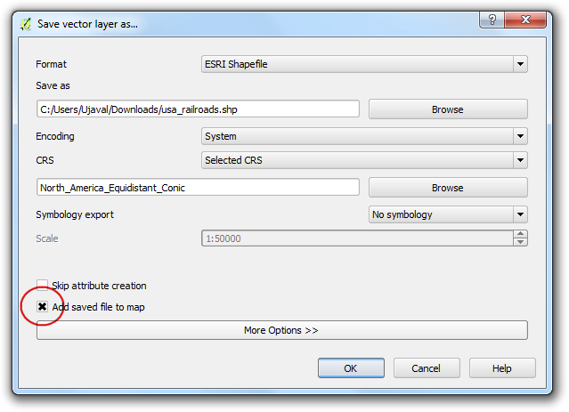
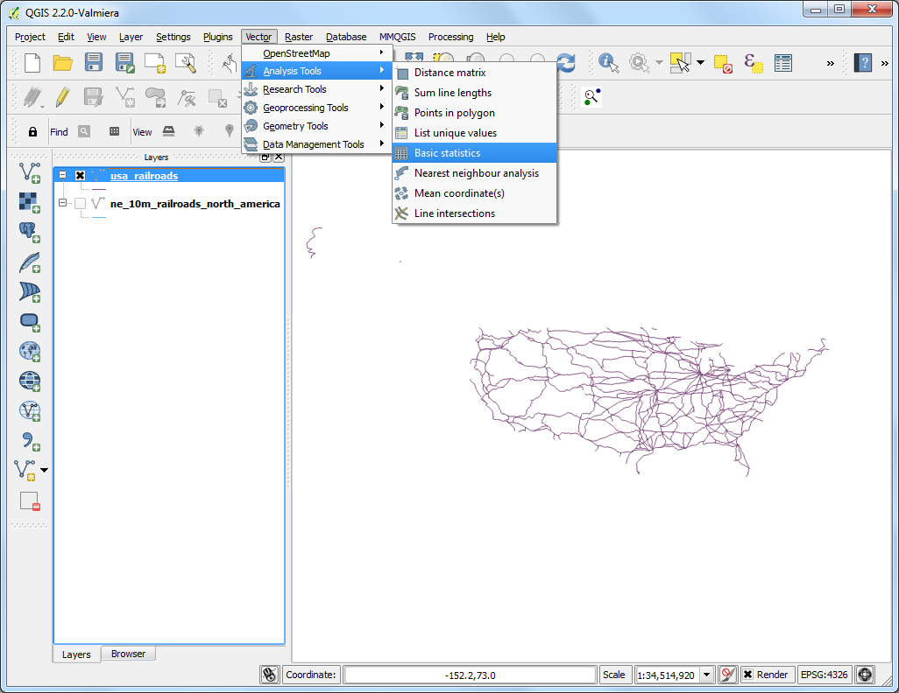

計算線段的長度和統計資訊
(Unfinished) QGIS 內建的功能可以計算圖徵的幾何性質，像是長度、面積、周長等等。
內容說明
使用北美鐵路網的線段式 shapefile 來計算美國的鐵道總長度。
操作流程
選擇 。

選擇 ne_10m_railroads_north_america.zip 並按下 確定。

在 選擇加入的圖層... 對話框中，選擇 ne_10m_railroads_north_america.shp。（譯註：較新的 QGIS 版本不會出現這個步驟）

圖層載入後，會顯示所有北美的鐵道線段。我們的目標是只計算美國的鐵路長度，所以必須要先選擇那些位於美國境內的鐵路才行。以右鍵點選此圖層，然後 開啟屬性表格。

這個圖層含有一個叫做 sov_a3 的屬性，其值使用三個英文字母來代表這段圖徵位在哪個城市。我們要利用這個屬性來選擇位於美國境內的鐵路。

在 屬性表格 視窗中按下 使用表示式選取圖徵 的按鈕。

以表示式選取圖徵 的視窗出現後，在 函數列表 中的 欄位與值 的分類中找到 sov_a3 屬性，然後按兩下以加入到 表示式 區中，補完這個表達式 "sov_a3" = 'USA'，好了以後按下 選取 然後 關閉。

回到 QGIS 主視窗，現在在美國境內的線段都被選取，並標為黃色了。

現在來把選取區域另存新檔吧。在 ne_10m_railroads_north_america 圖層上按右鍵然後選擇 儲存選取區域為... （或是 存檔為...），

選擇 瀏覽 然後把輸出檔命名為 usa_railroads.shp。這裡我們順便轉換一下圖層的 CRS，請按下在 CRS 旁邊的 瀏覽 圖示。
註解
QGIS 的內建函數是使用圖層的座標參考系統 (CRS) 的預設單位來計算線段長度。因為 EPSG:4326 這個 CRS 使用角度當作單位，計算線段或面積的結果也會是角度或是平方度，以此作單位的數值其實並不實用。所以這裡必須要使用以公尺作為單位的專案座標參考系統來做計算。

因為我們是要計算長度，這裡來選一個等距離投影試試。在 過濾條件 欄位輸入 north america equ 後，底下的結果就會出現 North_America_Equidistant_Conic EPSG:102010，選擇它作為新的 CRS 之後，按下 確定。

回到剛才的 儲存向量圖層為... 視窗，勾選 加入儲存檔案至地圖中`（譯註：如果有 :guilabel:`儲存僅選取的圖徵，也應一併勾選），最後按下 確定。

操作完成後，QGIS 中會出現叫做 usa_railroads 的新圖層。現在已經用不到舊圖層，可以取消 ne_10m_railroads_north_america 的勾選，把它隱藏起來了。

在 usa_railroads 圖層上按右鍵，選擇 開啟屬性表格，

接下來就來為所有圖徵新增一個長度的屬性看看。按下 切換編輯模式 鈕以進入編輯模式，在此模式中，按下 開啟欄位計算 鈕。

在 欄位計算器 中，先勾選 建立新欄位，在 輸出欄位名稱 中輸入 length_km，在 輸出欄位類別 中選擇 十進位數(實數)，精確度 調到 2，然後在底下的 函數列表 框中，找出位於 幾何欄位 分類中的 $length，並且點兩下以加入 表達式 區塊。因為我們想要以公里為單位但圖層的 CRS 使用公尺為單位，所以這裡公式要改成：$length / 1000。最後按下 確定。

回到 屬性表格，新的 length_km 屬性就會出現。再次按下 切換編輯模式 以儲存剛才所做的修改。

現在每個線段都有自己個長度了，我們只需簡單的加總，就能知道全線段總長。選擇 ，

然後在 輸入向量圖層 中選擇 usa_railroads，在 目標欄位 中選擇 length_km。按下 確定 後，就可以看到許多的統計資訊出現，其中的 總和 數值就是我們這次要找的鐵道總長度。
註解
鐵道總長度在不同的投影下會有些微的不同。實務上，線段、道路等長度一般會在製作資料庫時一併測量，並作為圖徵的其中一個屬性。本教學介紹的方法可以當作真實線段長度的近似估計，使用在那些沒有這個屬性的圖徵上。